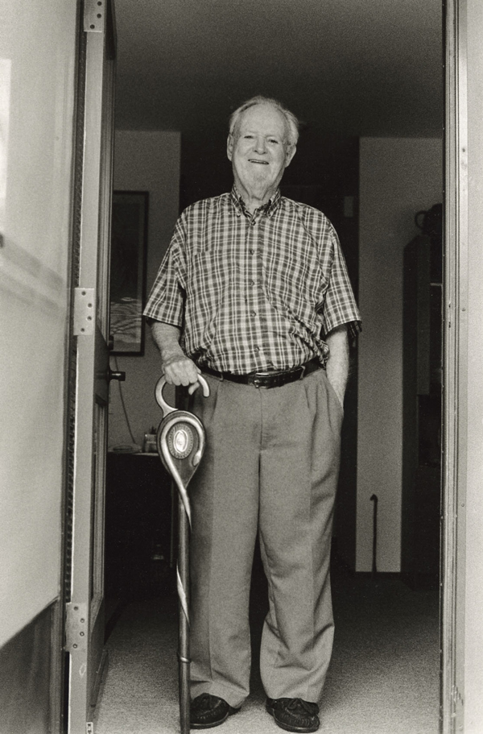
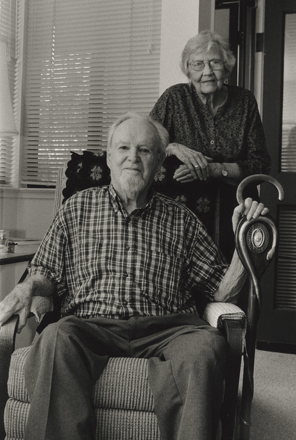

Dear Friends,
George Houser, a leader in the racial justice, anti-war, and African liberation struggles, died yesterday at Friends House in Santa Rosa, California. He was 99.
One of the most important yet least-heralded activists of the 20th century, George Houser played a critical role in the foundations of the U.S. civil rights movement, the development of a global solidarity movement with African liberation struggles, and some of the most cutting-edge early initiatives of the Fellowship of Reconciliation, the nation's oldest interfaith peace and justice organization.
FOR Executive Director Kristin Stoneking said, “From the time he, along with the Union Eight, refused to register for the draft into World War II and accepted a prison sentence as a consequence, to the end of his almost 100 years when many sought him out to record in his own words the stories and interpretation of his life’s work, George Houser has made an indelible imprint on the journey toward human peace and freedom."
In addition to his year-long imprisonment as a conscientious objector, Houser co-founded the Congress of Racial Equality, co-organized the "first Freedom Ride" in 1947 (known as the Journey of Reconciliation), and worked with countless international activists to support the anti-colonialism struggle throughout the African continent.
 Stoneking added, "He was prophetic in his understanding of the violence of racism both in the United States and in colonialized Africa. His response of faithful creativity in the way of nonviolence built bridges and broke down barriers and will persist as a monumental body of work that moves us ever closer to the sought after beloved community. There is no doubt that even though George has left this physical plane, he will continue to be with us in spirit and legacy.” Stoneking added, "He was prophetic in his understanding of the violence of racism both in the United States and in colonialized Africa. His response of faithful creativity in the way of nonviolence built bridges and broke down barriers and will persist as a monumental body of work that moves us ever closer to the sought after beloved community. There is no doubt that even though George has left this physical plane, he will continue to be with us in spirit and legacy.”
In a tribute published today by FOR, Matt Meyer, convener of the War Resisters League Africa Working Group, noted that "Houser was the man with the contacts on both sides of the Atlantic, and with the administrative and speaking skills to hold together diverse peoples from all walks of life." Meyer added that Houser maintained an unwavering "commitment to revolutionary change through nonviolent resistance and reconciliation" yet never sought to force his own pacifist convictions on others, stating “my mission was to support the freedom struggle.”
 On the occasion of his 99th birthday this June, FOR paid tribute to George's rich legacy and received more than 100 messages of appreciation and recognition from around the world. On the occasion of his 99th birthday this June, FOR paid tribute to George's rich legacy and received more than 100 messages of appreciation and recognition from around the world.
In another such message received today from Pretoria, South Africa, Nomazizi Jamela wrote, "Today we are enjoying the fruits from the seeds you and fellow American anti-apartheid activists planted. I believe the entire African continent is happy that you were born and lived a life that no one can take away. You have made history and a difference to the human race."
Message from the Houser family
Houser died yesterday surrounded by family and friends at approximately 4:00 p.m. Martie Leys, one of George and Jean Houser's four children, shared these words:
"His leave-taking ended beautifully with a Friends House tradition that occurs when a resident dies. The community gathers and as the body is wheeled out to the mortuary vehicle, everyone sings. My dad's body was covered with a lovely ample quilt that was made by Charlotte, one of the Friends House residents, the quilt which covers the body of each person leaving Friends House in this manner. There were 50 or so who processed behind Dad's body as it was slowly wheeled to the van. We sang Swing Low Sweet Chariot, Amazing Grace, When the Saints Go Marching In, For He's a Jolly Good Fellow, This Little Light of Mine, to name a few of the songs. Some of these songs, Dad used to play on his harmonica. We sang our hearts out--it was so cathartic. Our family felt the warm embrace of the gathered community, and I want to share that with you."
 Two memorial celebrations of George Houser's life and legacy are currently being planned. The first is tentatively scheduled for Saturday, Sept. 19, at Friends House in Santa Rosa CA (details TBA). An east coast memorial will be held later in the fall in the New York metropolitan area (date and place TBA). Two memorial celebrations of George Houser's life and legacy are currently being planned. The first is tentatively scheduled for Saturday, Sept. 19, at Friends House in Santa Rosa CA (details TBA). An east coast memorial will be held later in the fall in the New York metropolitan area (date and place TBA).
As a continuing tribute, FOR will publish online a series of reflections on George's life and legacy in the coming days.
In his memory,
Ethan Vesely-Flad
Director of National Organizing
Fellowship of Reconciliation
Photos: (1) George Houser in Santa Rosa, 2014 (copyright Susanna Lamaina, used with expressed permission); (2) Houser on FOR staff, 1940s (FOR archives); (3) Houser in Angola in January 1962, from George Houser personal collection given to African Activist archive; George & Jean Houser in Santa Rosa, 2014 (copyright Susanna Lamaina, used with expressed permission); (4) Houser in Nyack in 2012 (Doug Hostetter).
|